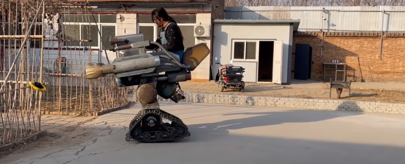
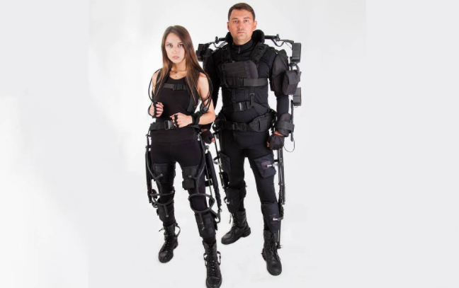
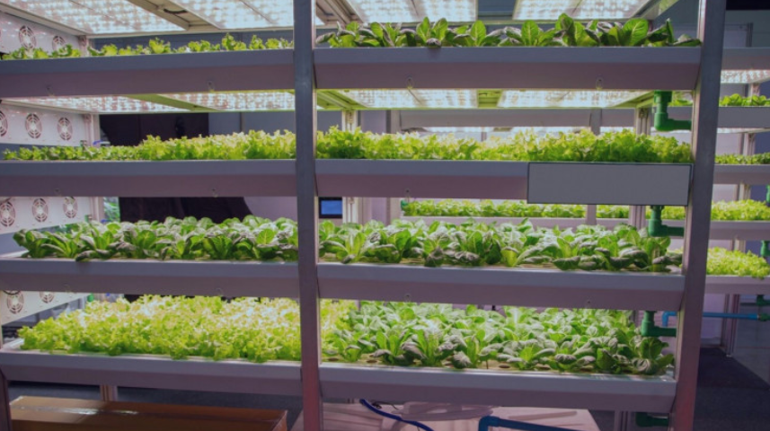
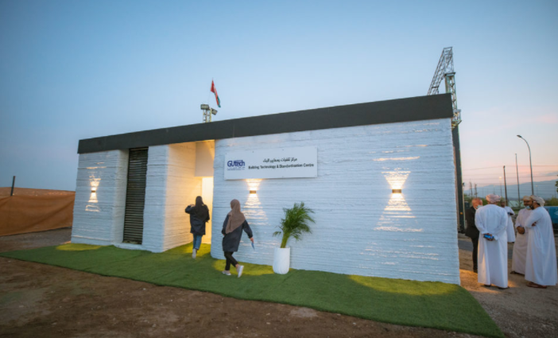

Новое бесполезное устройство от Гэн Шуай

Периодически попадающий в заголовки благодаря своим причудливым изобретениям, 31-летний Гэн Шуай — бывший сварщик из Хэбэя — сделал новое бесполезное устройство. Или не устройство, а машину (трактор, робота???)…
Прозванный китайцами «бесполезным Эдисоном», Гэн прославился своими бесполезными, но по своему гениальными изобретениями, в том числе чехлом смартфона для разделки мяса, галстуком для самообороны и сейсмостойкой миской для лапши. Кстати, с чехлом вышло хуже всего…
Экзоскелеты российского производства пройдут тестирование в Ленэнерго

Два филиала Компании «Россети Ленэнерго» получили первые экзоскелеты российского производства, которые должны помочь сотрудникам при высоких физических нагрузках и обеспечить дополнительную защиту от несчастных случаев.
Эти промышленные экзоскелеты, производства «РТ – Доверенные Платформы РК», позволяют снизить риски получения травм, а также позволяют вдвое снизить нагрузку на опорно-двигательный аппарат. Их планируют использовать при расчистке просек в охранных зонах ЛЭП (т.н. полоса отчуждения).
Еще одним видом работ, где будут проверены отечественные экзоскелеты, станет заземление линий электропередачи.
Вертикальное земледелие помогает устойчивой экономике

Вертикальное земледелие — это относительно новая и революционная форма сельского хозяйства. Как следует из названия, она специально разработана для сельскохозяйственного производства внутри вертикальных структур.
Такие фермы могут быть созданы внутри старых складов, бывших в употреблении транспортных контейнеров, теплиц или других зданий, экономя пространство и энергию, за счет всего, что человек уже успел сделать или построить.
Напечатан первый дом за 1800 долларов

В результате сотрудничества компании разрабатывающей строительные материалы и поставщика промышленных 3D-принтеров был напечатан первый дом, материалы для которого обошлись всего в 1800$.
Подобные «строения» делают давно — это не новость, но есть существенные отличия. Обычно, для того, чтобы напечатать дом используют специальные материалы (для удобства, назовём их чернилами), которые состоят из специальной сухой смеси.
Стоят такие чернила очень дорого, что серьёзно ограничивает возможности масштабирования такого «строительства».
Во время тренировки женщина чуть не задушилась бандажом
Попытка снять свою тренировку на видео обернулась для Амелии Дейблер неожиданной неприятностью.
Фитнес-гуру из Портленда (Орегон, США) попробовала выполнить отжимания не просто так, а с использованием специального бандажа для рук. Сложности начались уже в тот момент, когда Амелия попыталась надеть на себя эластичную повязку.